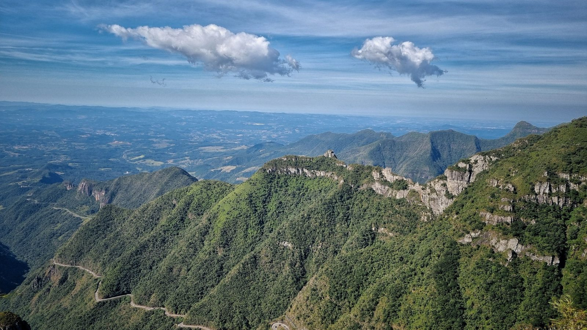

Santa Catarina · Qualidade de vida
Santa Catarina mantém o topo nacional em segurança e longevidade
São 8,6 mortes violentas por 100 mil habitantes contra média nacional de 23. E o catarinense vive, em média, 81,1 anos. Nas duas listas, o estado aparece em primeiro lugar.
Em 30 segundos · Modo de Leitura, formato original Santa Informa
Santa Catarina segue como o estado mais seguro do Brasil, com 8,6 mortes violentas por 100 mil habitantes. A média nacional e de 23.
E também lidera em expectativa de vida: 81,1 anos, segundo o IBGE, a frente de Espirito Santo e São Paulo.
No ranking de qualidade de vida do IPS Brasil 2026, o estado aparece em terceiro lugar nacional, com nota 65,58 contra 63,40 da média do país. Brusque, Jaraguá do Sul e Tubarão lideram em segurança.
Santa CatarinaPublicada em Atualizada em 5 de agosto de 2026, 17h19Redação Santa Informa

Entenda o assunto
O Anuário Cidades Mais Seguras do Brasil trabalha com a taxa de mortes violentas intencionais por 100 mil habitantes, indicador usado internacionalmente para comparar níveis de violência entre territórios de tamanhos diferentes.
A expectativa de vida ao nascer, calculada pelo IBGE, estima quantos anos uma pessoa nascida hoje deve viver caso se mantenham as condicoes atuais de mortalidade. Não é uma previsão individual, e sim uma sintese das condicoes de saúde, renda e saneamento de uma população.
Já o Índice de Progresso Social avalia dimensões que o PIB não captura, organizadas em necessidades humanas básicas, fundamentos do bem-estar e oportunidades. É útil justamente por medir resultado social, e não volume de riqueza.
Para quem mora no litoral. Os números são estaduais e não substituem o retrato de cada cidade. Municípios de crescimento populacional acelerado, como os da Costa Esmeralda, tendem a apresentar dinamicas próprias que a média do estado não mostra.
Os números que importam
- 8,6 mortes violentas por 100 mil habitantes, contra média nacional de 23
- 81,1 anos de expectativa de vida, a maior do Brasil
- 3o lugar nacional em qualidade de vida, com nota 65,58 no IPS Brasil 2026
- Brusque, Jaraguá do Sul e Tubarão lideram o ranking de segurança entre os municípios
- Único estado do país com taxa de mortes violentas abaixo de 10 por 100 mil
Outros jeitos de ler
Modo de Leitura · formato originalO resumo de 30 segundos está no topo e a versão completa é o texto acima. Aqui ficam as três leituras da casa sobre o mesmo assunto.
Clara, a otimista
Esses dois números juntos explicam por que tanta gente se muda para ca. Você vive mais e vive com menos medo. Não existe folder de imobiliária que venda melhor do que isso, e o melhor: não e folder, e dado oficial.
Repare em uma coisa boa: as cidades que lideram em segurança não são as mais ricas do estado. Brusque, Jaraguá e Tubarão são cidades de trabalho, de indústria e de vida comum. Isso mostra que dá para ter segurança sem ser paraíso fiscal.
E o litoral se beneficia direto. Quem escolhe Itapema ou Porto Belo está comprando praia, sim, mas está comprando também esse pano de fundo estadual.
Seu Prudêncio, o criterioso
Média estadual é sempre uma síntese e não descreve cada município igualmente. Cidades de crescimento populacional acelerado, como as do litoral norte, merecem leitura própria, e o dado agregado não substitui esse acompanhamento.
Há também um ponto demográfico que exige planejamento de longo prazo: população que vive mais é população que envelhece, o que pressiona saúde e previdência nas próximas décadas. É um desafio de gestão, e não uma má notícia.
O que chama atenção nesses números é a consistência. Santa Catarina não aparece no topo por um ano isolado, aparece de forma continuada, e isso indica política pública sustentada ao longo do tempo. No Brasil, resultado que se mantém por anos é mérito que merece ser dito com todas as letras.
Caco, o sarcástico
Somos o estado onde as pessoas vivem mais e morrem menos. Isso deveria estar escrito na entrada da BR-101, logo abaixo da placa de congestionamento.
O lado engracado e que todo mundo descobriu isso ao mesmo tempo. Ficou lotado, ficou caro, ficou dificil achar vaga. Mas antes lotado por ser bom do que vazio por ser ruim, e disso a gente entende.
Resumindo: o catarinense reclama de fila, de preco e de turista. E depois vive até os oitenta e um anos para poder reclamar mais um pouco. Não e a pior das vidas.
Fontes: IBGE, Anuário Cidades Mais Seguras do Brasil 2025, Índice de Progresso Social Brasil 2026 e Governo de Santa Catarina.
Espaço patrocinado
Meio de matéria · leitor engajado até o fim do texto
Formato disponível para anunciante da região